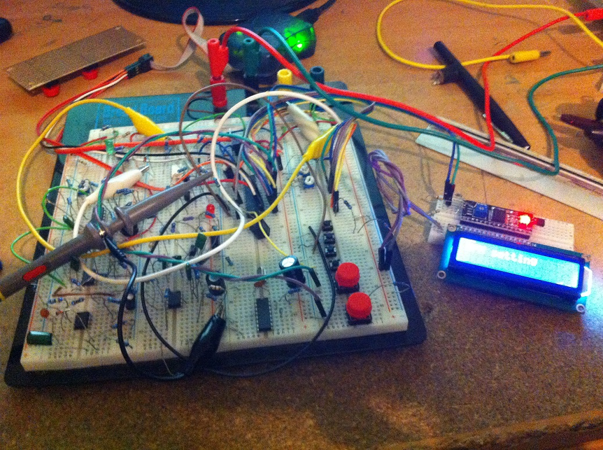
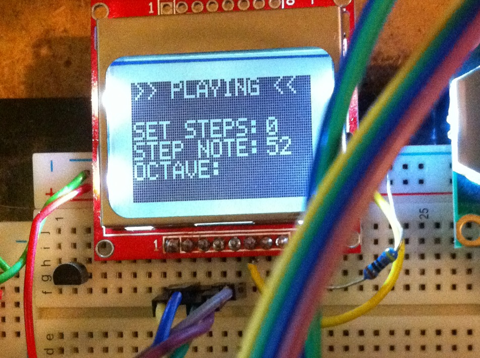
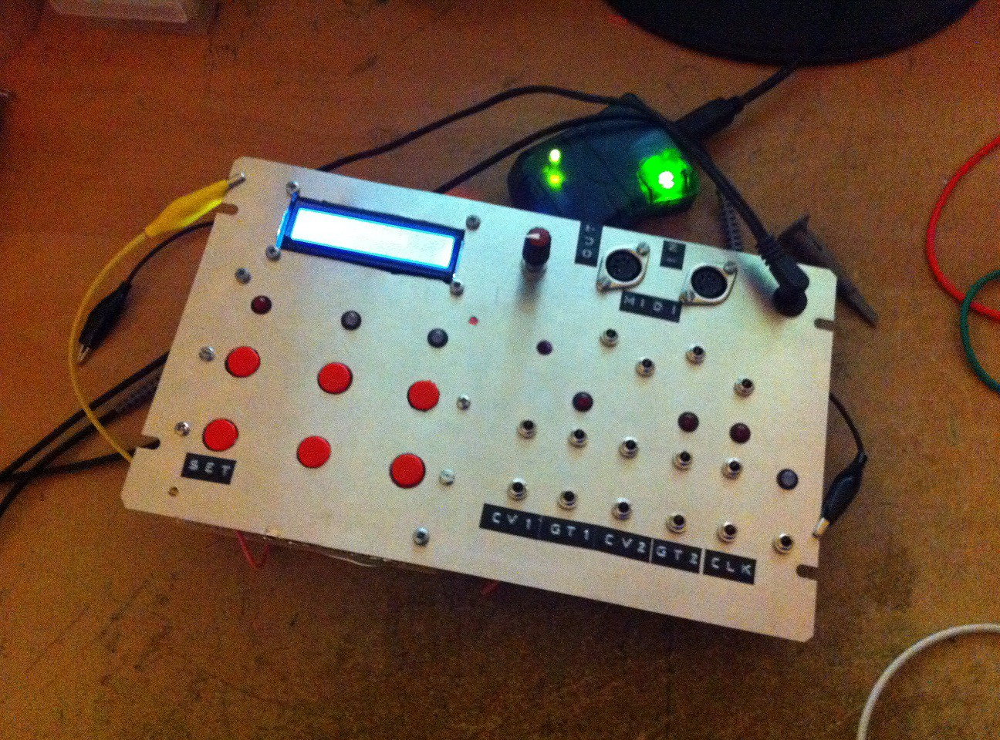

CV MIDI SEQUENCER
a midi sequencer that converts midi note to CV, ideally thought to be used with 1v/oct eurorack VCOs. It was firstly designed to be an eurorack module (with the small vintage nokia graphic display) but the futur largeness of it turned it into a stand-alone device. Nonetheless the lack of direct control and the deep menu browsering made the project not very intuitive, unless it was linked to a midi controller with knobs and switches. However, in this case the all purpose of a small device was totally lost. I re-work the project and the code several times to land on this inevitable : we need things to turn and push to have a enjoyable experience. Also considering the recent explosion of small general purpose devices (Ipad, smartphone, tablette and surfaces) do we still need a pure dedicated interface for something as trivial as this ? whereas a software program and a small module to convert datas into the analog world would suffice ?   
{kind=link}
{kind=link}
{kind=link}